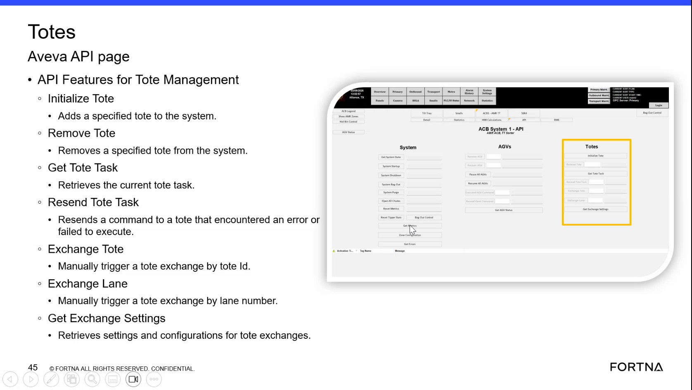

| Procedure ID | proc_check_the_current_tote_task_using_the_get_tote_task_api_function_v1 |
|---|---|
| Title | Check The Current Tote Task Using The Get Tote Task API Function |
| Procedure Type | diagnostic |
| Primary Role | L1_support |
| Support Safe | Yes |
| Validation Status | needs_sme_review |
| Merge Status | source_finalized |
Use the documented Get Tote Task function shown on the Aveva API tote management page to identify the current tote task. The source supports the existence and purpose of the function, but does not provide execution details, parameters, or response fields.
Use when a support user needs to confirm that the Aveva API tote management page includes the Get Tote Task function and to verify from the source that it is intended to retrieve the current tote task. If access to the API page is available, use the documented function as shown by the page to check the current tote task.
Responsible role: L1_support
Instruction:
Open or view the Aveva API page that lists tote management functions.
Expected result:
The tote management API page is visible.
Screens / Images:

Stop or Escalate If:
Responsible role: L1_support
Instruction:
Locate the function named "Get Tote Task."
Expected result:
The Get Tote Task function is found in the tote management function list.
Screens / Images:
Stop or Escalate If:
Responsible role: L1_support
Instruction:
Verify from the displayed description that this function retrieves the current tote task.
Expected result:
The function purpose is confirmed from the source.
Screens / Images:
Stop or Escalate If:
Responsible role: L1_support
Instruction:
Use the function as documented by the page to check the current tote task, if access to the API page is available.
Expected result:
The current tote task is identified or retrieved using the Get Tote Task function.
Screens / Images:
Stop or Escalate If:
Responsible role: L1_support
Instruction:
Record that the current tote task was retrieved using the Get Tote Task function.
Expected result:
A record exists that the current tote task was retrieved using Get Tote Task.
Stop or Escalate If: